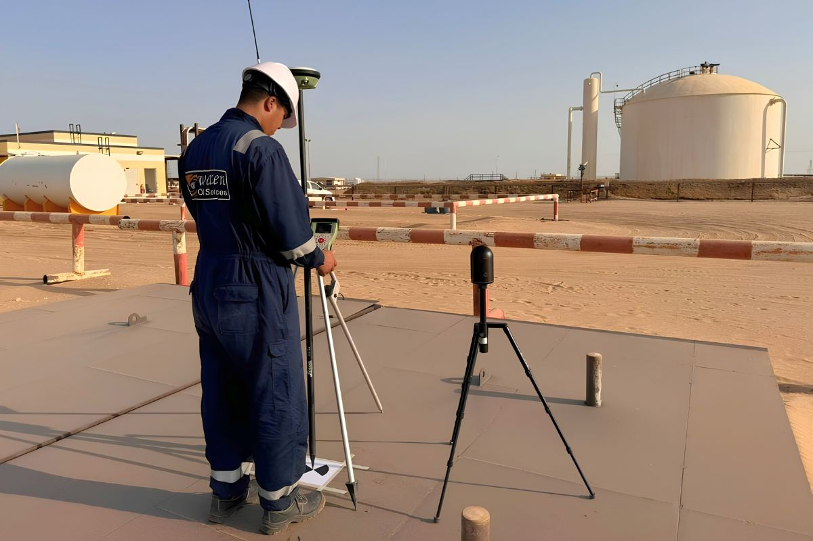

Engineering & Project Delivery
Wazen provides project engineering, technical coordination and engineering-led delivery for defined oil and gas project scopes in Libya. Our teams support projects from initial surveys and design review through construction planning, technical supervision, commissioning and as-built handover, working with specialist engineering partners where additional capacity is required.

Engineering & Project Delivery Services
- Project Engineering & Technical Coordination
- Feasibility Studies & Basic Design
- Engineering Design Review & Specialist Design Support
- Topographic Surveys, GPR & 3D Laser Scanning
- 3D Modelling & As-Built Documentation
- Project Planning, Controls & Construction Management
- Engineering Support for Brownfield Modifications